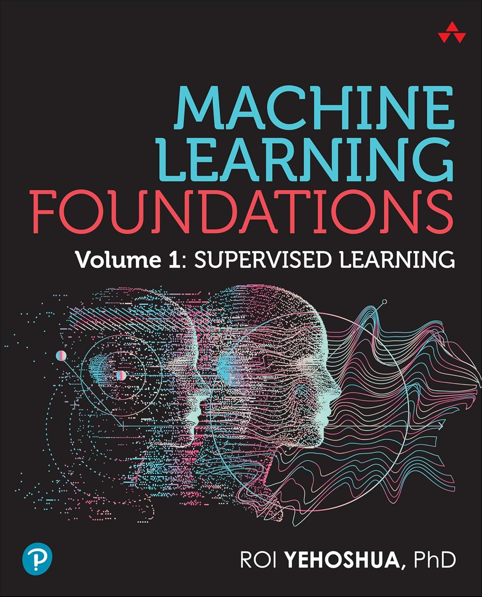

About the Book

Machine Learning Foundations is an in-depth textbook for students, educators, and practitioners. It covers core supervised learning techniques, mathematical foundations, optimization methods, and practical implementations using Python. The book includes dozens of illustrations, exercises, real-world datasets, and extensive references to guide readers from theory to practice.
Purchase
The book will be available on Amazon in February 2026.
Buy on Amazon
Sample Chapter
Download a free sample chapter (PDF):
Download Sample Chapter
Lecture Slides
Slides are available as downloadable PDFs:
Solutions
Solutions for selected exercises are available here:
Solutions Page
Citation
@book{yehoshua2026ml,
title={Machine Learning Foundations},
author={Roi Yehoshua},
year={2026},
publisher={Pearson},
isbn={978-0135337868}
}